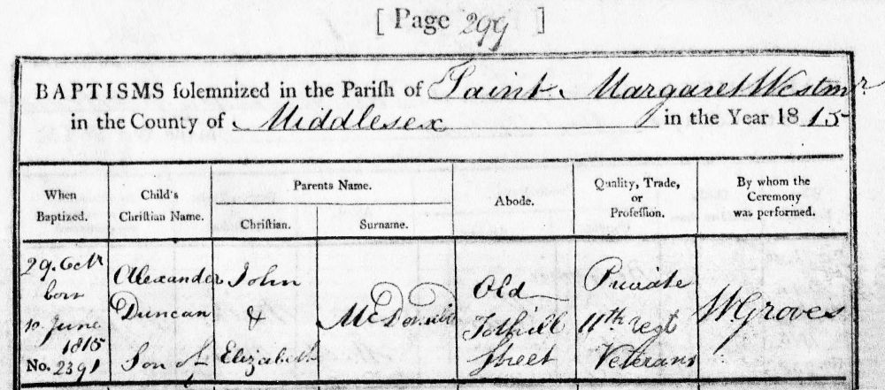

-

The McDonalds in Australia
The first of our McDonald ancestors to set foot on Australian soil was Alexander Duncan McDonald who was a true Scottish Highlander even though he was born in London. He lived up to the motto of the McDonald clan, Per Mare Per Terras (By Sea, By Land), by crossing the seas and travelling overland to start a new family in the Northern Rivers.

Alexander Duncan McDonald
Alexander Duncan McDonald
Ship builder and Northern Rivers pioneer
Grandma’s paternal grandparents, Alexander Duncan ‘Sandy’ McDonald (1815-1888) and Catherine ‘Kit’ Gillies (abt 1816-1856), were the very first of our direct ancestors to make these shores.Sandy’s father, John MacDonald (1790-1841), had fought against Napoleon’s forces in Spain and at Waterloo before becoming a shipwright in Mull. His mother, Elizabeth May, is a mystery but it’s thought she went to London to give birth to him because of delicate health.Baptism of Alexander Duncan McDonald in London, when
his father John was a private in the 11th reg. Veterans
Sandy’s grandfather, John MacDonald (1765-1800), is said to have eloped with a chieftain’s daughter, Mary Campbell (1765-). He created a diversion by letting a herd of cattle into the chieftain’s corn crop and then rowed with his bride form the Isle of Staffa to Mull in a long boat of the type usually powered by nine oarsmen. During his apprenticeship as a shipwright, Sandy worked in Glasgow, where he met and married Kit Gillies, a house servant. In 1837, the couple sailed to Sydney on the Portland, figuring among the first entire shipload of Scots brought to Australia by a private operator under the colonial bounty system.
Some time after 1843, the MacDonalds moved to the Richmond River (on foot!) where Sandy set up business as a shipwright in Wardell. Kit bore ten babies in her short life, only five of which survived childhood. Our great grandfather, John MacDonald (1849-1901), was the second surviving child.Catherine died in childbirth in 1856 with an Aboriginal woman in attendance. She was the fourth white person to be buried in the old cemetery at Ballina. There is a plaque in her memory in the Pioneer Wall of Remembrance at East Ballina Park.
Surviving children of Catherine “Kit” Gillies (abt 1816-1856) and Alexander Duncan MacDonald (1815-1888). There were also five boys who died at early ages.
Alexander Duncan (1841-)
John MacDonald (1843-1901) Born 7 September in Clarence River. Our direct ancestor
Elizabeth May MacDonald (1848-1913) Born 23 November in Clarence River. Died in Sydney.
Mary MacDonald (1850-)
Catherine Hannah MacDonald (1853-) Born 1 October in Clarence River.
Typically for the men in our family tree and probably for the times, Sandy wasted no time finding a new wife. Mary Ann Loaring, a midwife from Dorsetshire, was 25 or so when she took on the 41-year-old widower and five stepchildren ranging in age from 15 to two. Eight more children eventually joined the brood, and by all reports, Mary Anndid an outstanding job of raising the whole lot.
At some stage the family moved from Wardell to Rockymouth, Woodburn, where Sandy presumably worked in the local shipyard. One day in 1865, Sandy and Mary Ann were returning from one of their regular trips up the Richmond River to Ballina to collect stores when a gale overturned their boat near the mouth of a creek. They were forced to camp overnight. The next morning, they took a walk around and decided to select a farm in the area.
In fact, Sandy was the only second person to do so and the little town now known as Broadwater was originally named MacDonald Town in his honour. Two of his sons and one son-in-law (Henry Robins) also selected land there. However, he was probably never a professional farmer. In some records, Sandy is listed as a “boat builder”; in others as a “sawyer”.
Apparently, the ‘blacks were numerous and troublesome’ at the outset. The family developed good relations with them, but two issues did arise. Sandy and Mary Ann rescued a child the tribe had thrown into a fire and then raised her as their own. Called Mary, she was the same age as their natural daughter, Agnes Ella. In another story uncovered by research, an Aboriginal woman accused Sandy of getting her husband drunk. The woman saw fit to curse him and all his descendants. Perhaps the curse worked. The MacDonalds did have more than their fair share of tragedy. Two of Mary Ann’s natural daughters lost their first husbands young—one to throat cancer and the other from drowning. Two of her sons died before she did (although it’s worth adding that she reached the age of 86). The Aboriginal girl they took into their home died young in childbirth. And her stepson, Johnny Mac (see separate entry), was also cut off in his prime.
About Us
We are the descendants of Anglo-Scottish-Prusso-Germanic Australian migrants who settled in the newly formed colonies of New South Wales and Queensland in the nineteenth century. The idea behind these pages is to present the stories and characters of those early settlers along with information about their origins, descendants, families, whereabouts and activities.There are often themes running through their struggles and achievements telling a tale of resourcefulness and hardships in an alien world. The paradox of Australia as an ancient and raw continent and as a 'New World' portrays a collision of ideals and realities yet still shows a continuity in how those people dealt with everyday life.